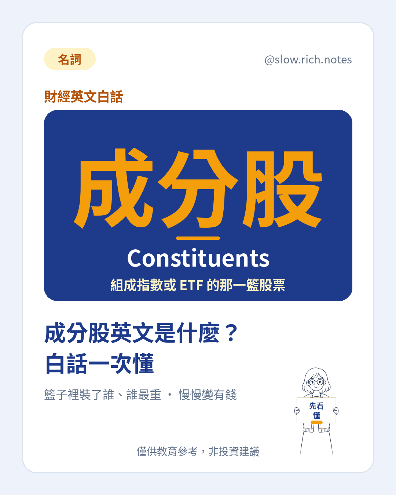

成分股英文是 Constituents，在基金資料或英文報表上也常看到 Holdings（持股）這個說法。簡單講，成分股就是「組成一個指數或一檔 ETF 的那一籃股票」；如果想先看短版定義，可以讀我們的成分股名詞解釋。
為什麼新手常查這個英文？因為很多基金月報、官網資料表直接寫 Constituents 或 Top 10 Holdings，看不懂就容易跳過。但成分股其實是最值得看的一頁：你買的不是一個名字，而是這一整籃東西。還不太確定 ETF 是什麼的話，可以先看ETF 是什麼的新手入門，再回來讀會更順。
接下來是重點：權重（Weight）。籃子裡每一檔股票占的比例不一樣，常見算法有兩種。一種是「市值加權」，公司越大、占比越高；另一種是「等權重」，每檔分到差不多的比例。假設例子：一個籃子有 50 檔股票（假設例子），若用市值加權，最大的那一檔可能就占了 20%（假設例子），排在後面的 30 檔加起來可能還不到 10%（假設例子）。
所以權重高的成分股，影響力也大。假設最大那檔占 20%（假設例子），它某天跌 10%（假設例子），光它就會讓整個籃子少掉約 2%（假設例子）；而占 0.5%（假設例子）的小成分股，就算跌一樣多，影響只有 0.05%（假設例子）。看漲跌時，與其記檔數，不如先記「誰最重」。
這也帶出新手最常見的誤會：檔數多 ≠ 真的分散。一籃子寫著 100 檔（假設例子），聽起來很分散，但如果前十大就占了 60%（假設例子），或八成都集中在同一個產業，那你的命運其實主要綁在少數幾家公司、或某一個產業的景氣上。真正的分散，要看權重和產業，而不只是數量。
那要怎麼查？給你三個小步驟。第一，打開發行商官網或基金月報，找「前十大成分股／Top 10 Holdings」，把前十大合計占比算一下。第二，看「產業分布」，留意有沒有單一產業占比特別高。第三，讀「調整規則」：多久檢視一次（例如每季或每半年）、新增和刪除成分股的條件是什麼、單一成分股有沒有權重上限。這些規則會影響籃子的長相，也和追蹤誤差有關——換股時的成本與時間差，可能讓基金表現和指數之間出現小落差。
還有一個小提醒：成分股不是固定不變的。指數定期調整時，有些公司會被放進來，有些被移出去；所以你半年前查到的名單，現在可能已經不一樣。養成習慣，定期回去看一下最新名單和權重，比聽別人一句「這檔很分散」更踏實。
一句話收尾：成分股英文是 Constituents（也說 Holdings），它告訴你籃子裡裝了誰、誰最重。看懂權重、產業分布和調整規則，你才知道自己真正買了什麼；它不會替你決定買賣，但能幫你少一點「原來是這樣」的驚嚇。想複習基本概念，可以回到ETF 名詞解釋慢慢看。
本篇為投資教育內容，僅供參考，非投資建議，亦不針對特定股票或商品。文中數字皆為假設例子，實際以發行商公告與主管機關資訊為準。